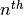

VertexFrame bin_column_equal_depth¶
-
bin_column_equal_depth(self, column_name, num_bins=None, bin_column_name=None)¶ Classify column into groups with the same frequency.
Parameters: column_name : unicode
The column whose values are to be binned.
num_bins : int32 (default=None)
The maximum number of bins. Default is the Square-root choice
 , where
, where  is the number of rows.
is the number of rows.bin_column_name : unicode (default=None)
The name for the new column holding the grouping labels. Default is
<column_name>_binned.Returns: : dict
A list containing the edges of each bin.
Group rows of data based on the value in a single column and add a label to identify grouping.
Equal depth binning attempts to label rows such that each bin contains the same number of elements. For  bins of a column
 of length , the bin
number is determined by:
of length , the bin
number is determined by:
where
 is a tie-adjusted ranking function over values of
.
If there are multiples of the same value in , then their
tie-adjusted rank is the average of their ordered rank values.
is a tie-adjusted ranking function over values of
.
If there are multiples of the same value in , then their
tie-adjusted rank is the average of their ordered rank values.Notes
- Unicode in column names is not supported and will likely cause the drop_frames() method (and others) to fail!
- The num_bins parameter is considered to be the maximum permissible number of bins because the data may dictate fewer bins. For example, if the column to be binned has a quantity of :math”X elements with only 2 distinct values and the num_bins parameter is greater than 2, then the actual number of bins will only be 2. This is due to a restriction that elements with an identical value must belong to the same bin.
Examples
Given a frame with column a accessed by a Frame object my_frame:
>>> my_frame.inspect( n=11 ) [##] a ======== [0] 1 [1] 1 [2] 2 [3] 3 [4] 5 [5] 8 [6] 13 [7] 21 [8] 34 [9] 55 [10] 89
Modify the frame, adding a column showing what bin the data is in. The data should be grouped into a maximum of five bins. Note that each bin will have the same quantity of members (as much as possible):
>>> cutoffs = my_frame.bin_column_equal_depth('a', 5, 'aEDBinned') [===Job Progress===] >>> my_frame.inspect( n=11 ) [##] a aEDBinned =================== [0] 1 0 [1] 1 0 [2] 2 1 [3] 3 1 [4] 5 2 [5] 8 2 [6] 13 3 [7] 21 3 [8] 34 4 [9] 55 4 [10] 89 4
>>> print cutoffs [1.0, 2.0, 5.0, 13.0, 34.0, 89.0]